I was planning to go to Nanshan Farm today, but I decided to reset my priority, you know, first thing first.
Even though I didn't think it was possible, I went to the bank to see if they can retrieve my credit card.
I thought I really should just report a lost card.
With an empty stomach, I went into the bank. The cashier asked for my ID, I told her the only thing I had with me was my passport.
Immediately, she knew I was looking for my Taiwan credit card.
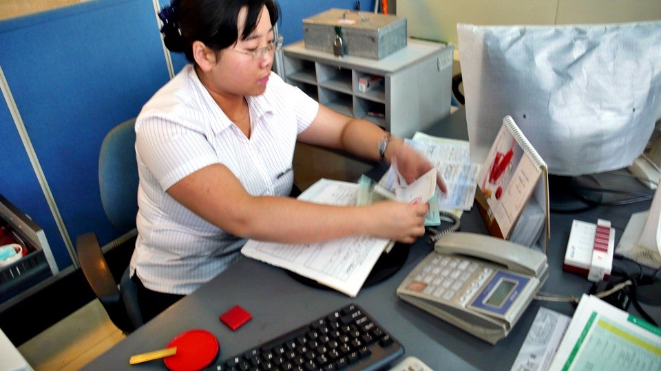
I filled a form, signed my name, I gave my credit card a big “welcome home” hug.
I would really need this card later on when I entered Europe.
The fee for cash advance was way too high here, I would wait for the money that Misasa wired to me later.
Mr. Bai came to look for me after I went back to the hotel.
He was in charged of the sales for MSI (Micro-Star International) at Xinjiang branch.
He helped me tremendously when I was here, including receiving packages from Taiwan, sending packages to Taiwan.
Even let me use his account to receive the money wired from Taiwan when he knew I lost my ATM card.
Thanks for the extremely efficient Mr. Bai and Misasa, I finally have cash again.
The only thing I needed to decide at this moment was if I should convert this US currency to RMB.
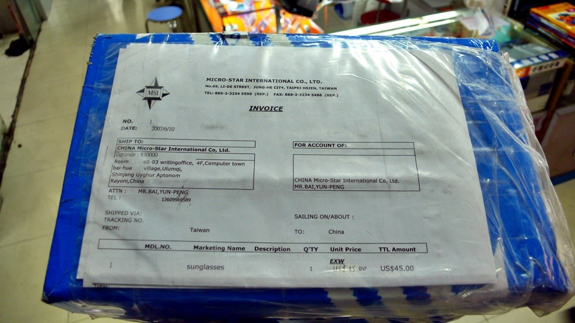
In the mean time, Misasa got another pair of 720 Armour T337 sun glasses from the owner, Dino, of the RST shop.
She also got me a pair of regular glasses, and sent them both via DHL.
Now I don't have to worry about getting sun burn of my eyes anymore.
The old and new pair of sun glasses are basically the same model, only the color of the frames are different.
The old pair has a black frame, and this one has a silver frame.
Because of the tragic experience, I had added some elastic strap to secure my new glasses on my ears,
and a neck strap to prevent the glasses run away from me again.
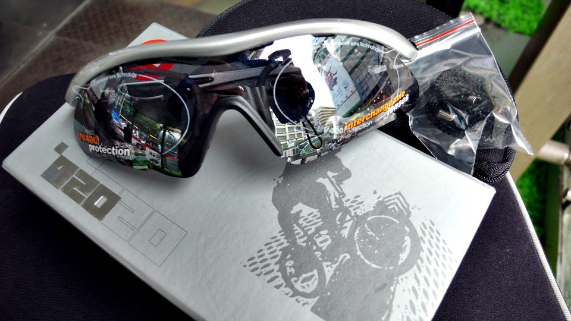
So far, I got a pair of replacement sunglasses, retrieved my credit card from the bank, and received the cash wired from Taiwan.
One by one, many thanks to Misasa in Taiwan and Mr. Bai at Xinjiang, all my problems were solved,
otherwise, I was really not sure how was I going to continue my trip like this.
But now, I am good again, I even bought some ice cream to celebrate at the hotel.
I spent the afternoon to organize the stuff I wanted to mail back to Taiwan.
Because the tires on Dido were still in a good condition, there was no need to retire them at Urumqi
(maybe I will check again when I arrive at the Kazakjstan border?).
So I ended up with 6 spare tires: I had 2 and Misasa just sent me 4.
In order to fit them all in my packs, I decided to send stuff like China map, entrance tickets, some souvenirs, back to Taiwan.
It was very hopeful that I could finally leave here to continue my ride.
My original plan was to stay at Urumqi for 3 days, and now was the day 5 already. I almost felt like a residence here.
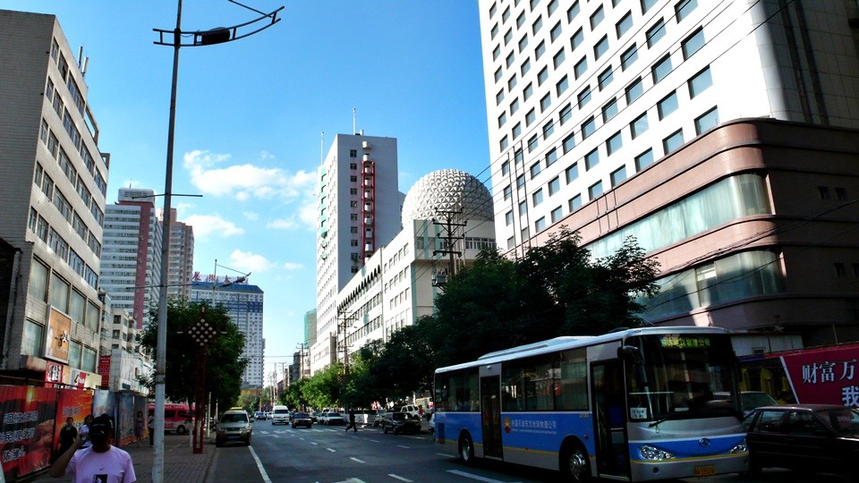
I walked to the northwest side of Urumqi city and back to the hotel yesterday, and it was quite a long walk,
which actually boosted my confidence about my physical condition.
Today, I decided to challenge myself again, to walk to the northeast part of the city.
I should see the Shuimogou Park, some nature spring, six mountains and a river.
It should be a big park. I walked for one and a half hour, passed several traditional markets.
I was always very attracted by the fruits and veggie stands, with the price of 1-2 RMB per jing (1 Jing is about 1.1 pound),
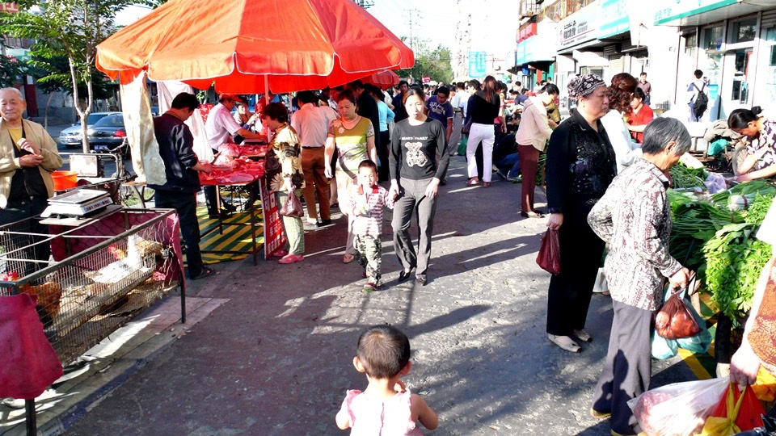
I can save a lot of money if I cook the food myself.
BUT, it was too much trouble to do so.
I ended up buying the pancakes (the kind with multi-layers) and finishing them on the way to Shuimogou Park.
It only cost 1 RMB to come here by bus. But I felt kind of laying back after staying here for so many days.
I thought this was an excellent workout opportunity for me, and I could always take bus back if I was really tired later on.

By 8:30, I finally saw the big sign ”Shuimogou Park”, right in front of me.
My legs were so tired that I can only keep going by imagining how magnificent the nature spring and watermills would be once I found them.
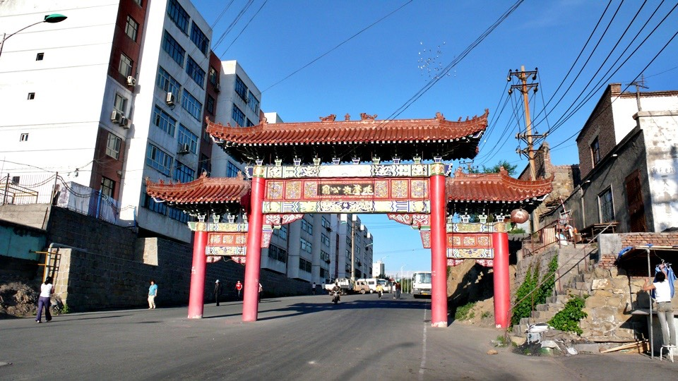
I walked and walked and I could not find the park.
How could such a big park just disappear on earth?
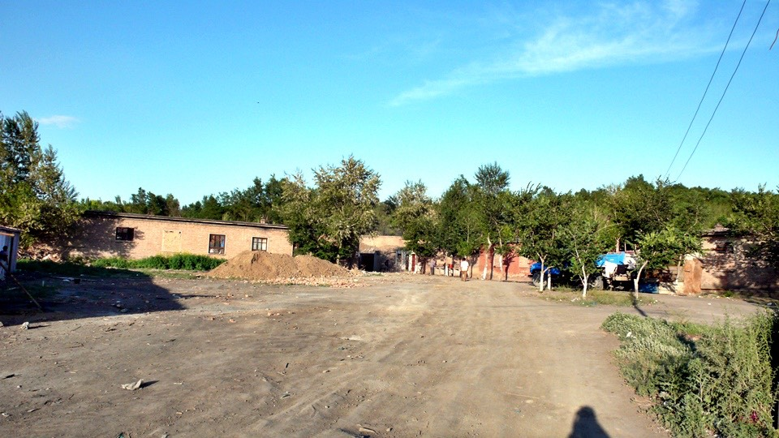
Judging by these constructions, I was afraid that I got the worst timing to visit here.
I walked around the construction site and tried to find any trace of the PARK.
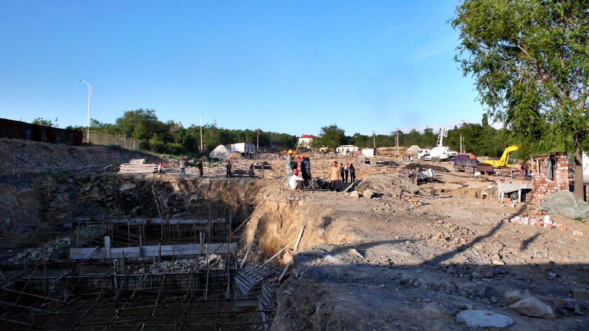
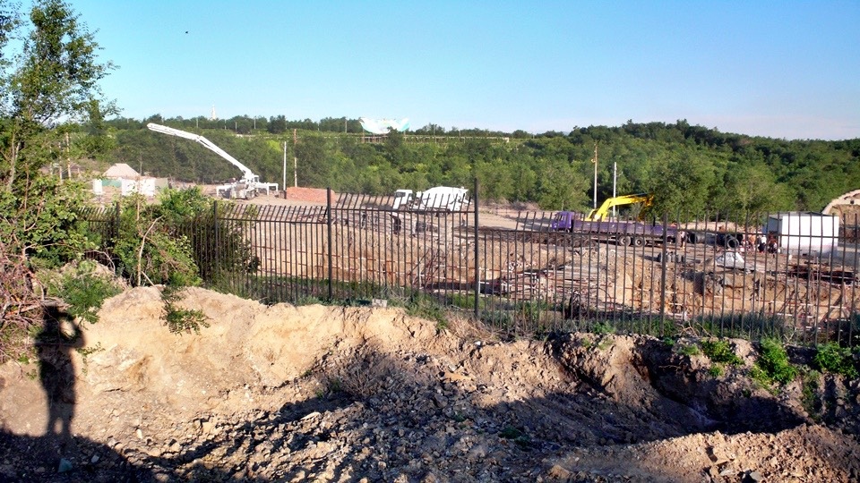
With so many trees here, maybe it should be renamed as some forest/woods.
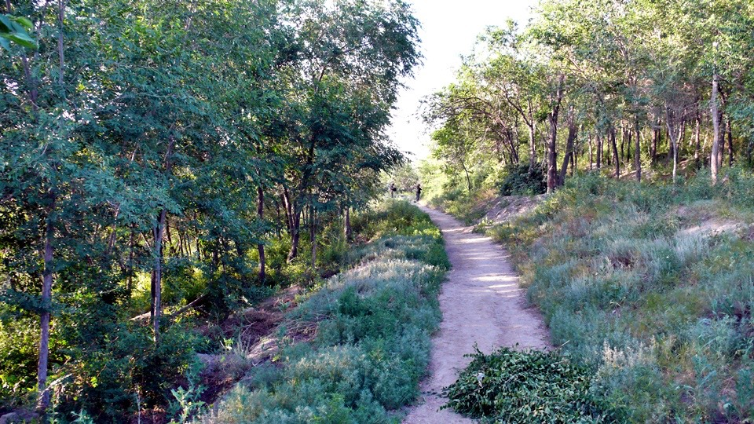
Following a small path, I saw the boarder of Urumqi city, some mountains, and some huge buildings look like power plants.
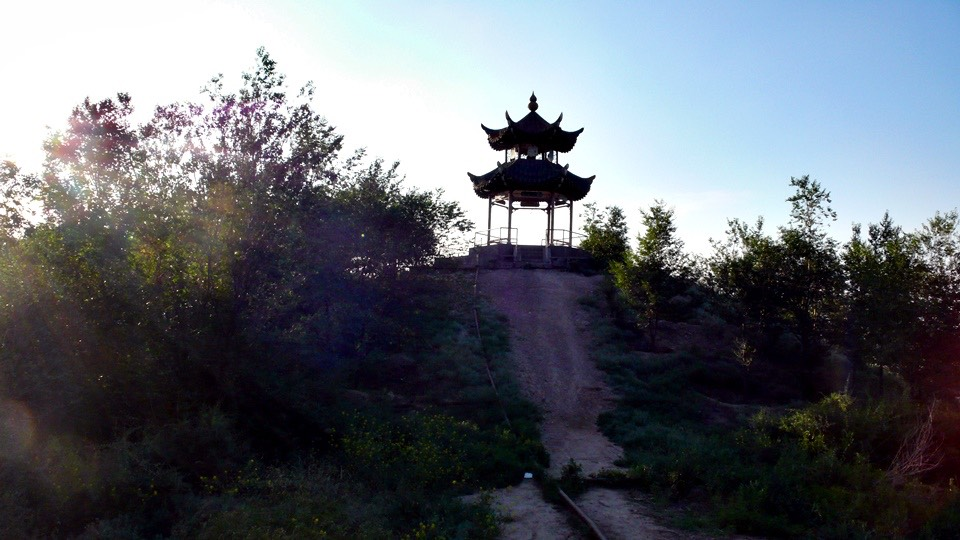
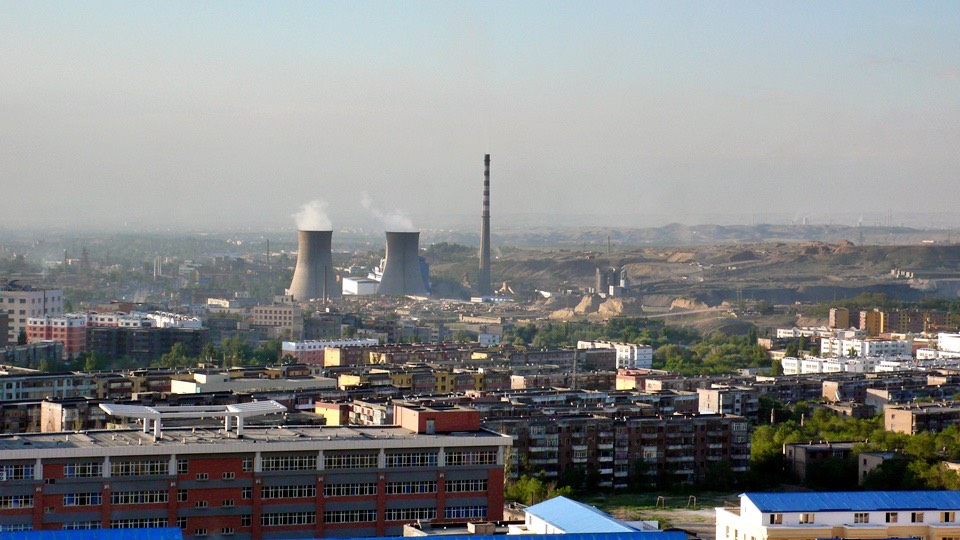
No matter how hard I tried, all I could see were trees and mountains, no spring, no watermills.
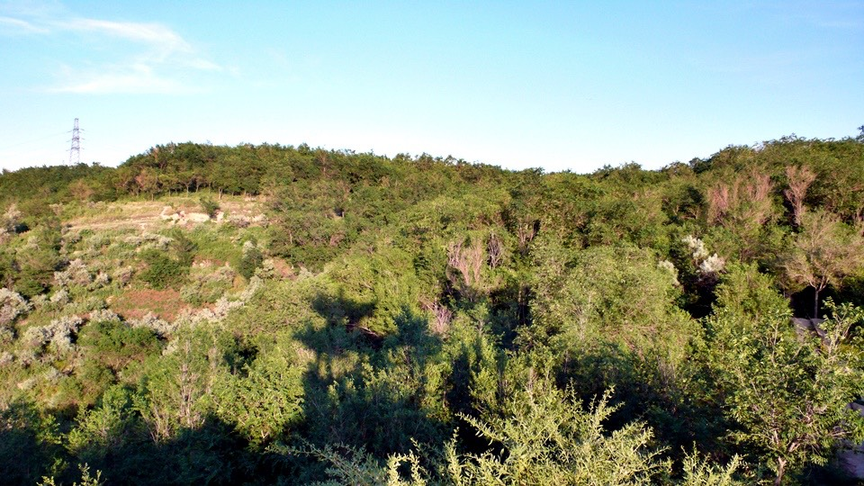
Finally I saw a lady who was doing her walks,
and she told me that I needed to continue for another 4 km to see the nature spring and watermills.
Oh My God!!! I can not walk any further, I was too tired.
I was afraid if I forced myself to walk another 4 km, I would not be able to ride my bike tomorrow.
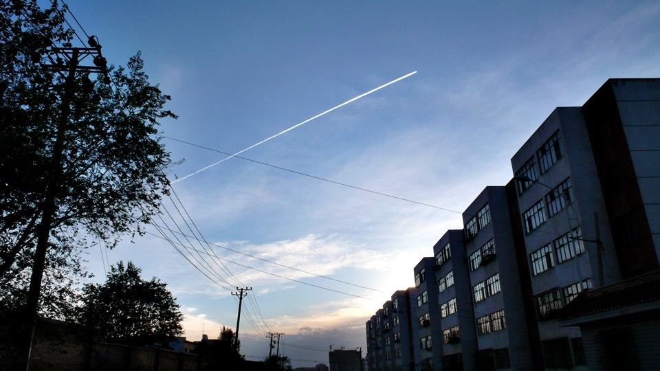
I walked back down to the entrance, and found the bus station.
I took No.3 bus to get back to the hotel.
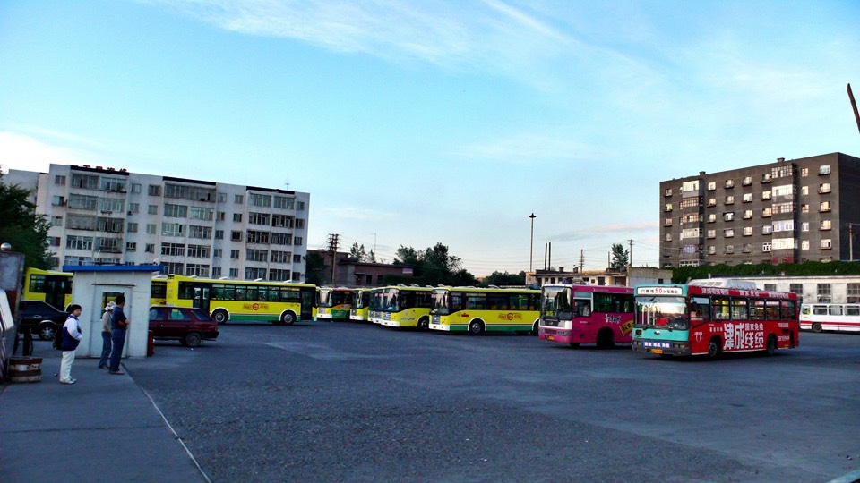
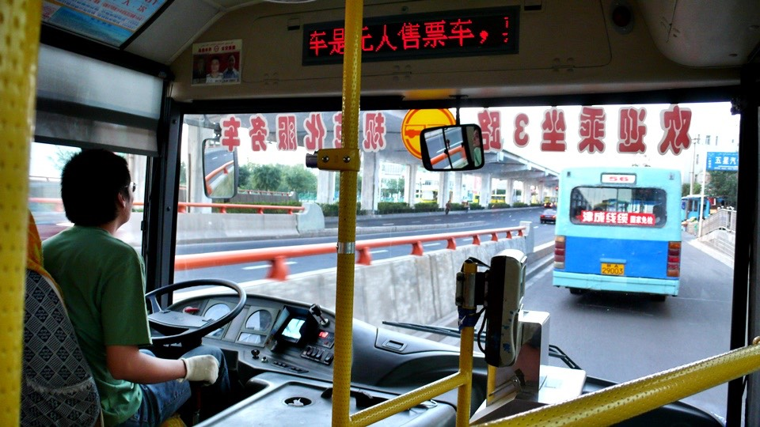
After spraying rest of the "Zero" (similar to Icy Hot or Bangay that can relieve muscle pain) on my legs,
I threw away the empty bottle. One less burden for Dido!
As for tonight, I was sure I would be so busy rearranging my packs, to get ready for tomorrow’s journey.